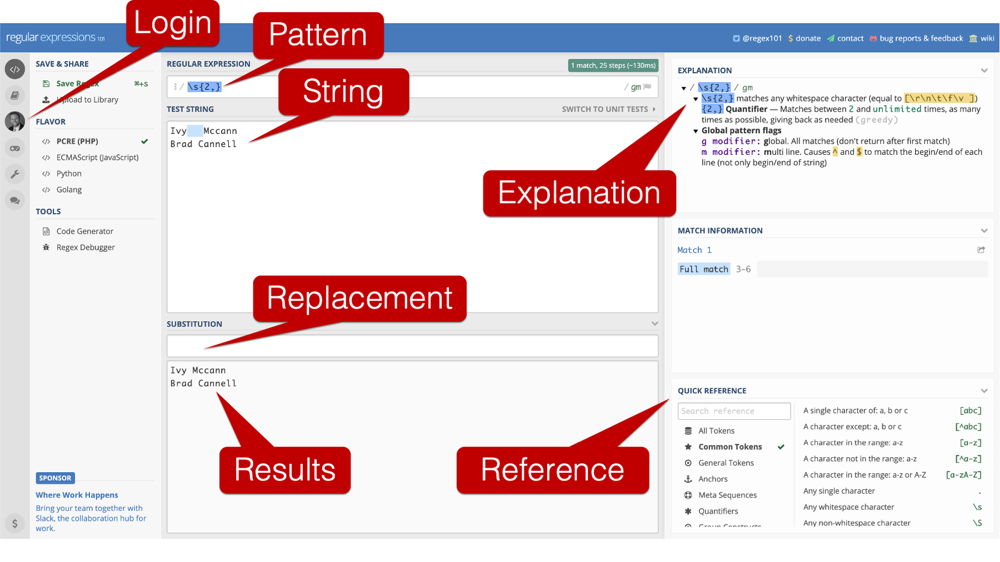

# A tibble: 15 × 6
admit_date name dob address city symptoms
<dttm> <chr> <date> <chr> <chr> <chr>
1 2017-02-01 05:22:30 "Zariah Hernandez" 1944-09-27 3201 ORANGE… FORT… "\"Pain…
2 2017-04-08 09:17:17 "Tatum Chavez" 1952-06-12 1117 richmo… Fort… "Pain"
3 2017-04-18 09:17:17 "Tatum S Chavez" 1952-06-12 1117 richmo… Fort… "Pain"
4 2017-08-31 18:29:34 "Arabella George" 1966-06-15 357 Angle FORT… "\"Naus…
5 2017-09-13 06:27:07 "Jasper Decker" 1954-05-11 3612 LAURA … FORT… "\"Pain…
6 2017-09-15 18:29:34 "ARABELLA GEORGE" 1966-06-15 357 Angle FORT… "\"Naus…
7 2017-10-07 06:31:18 "Weston Fox" 2009-08-21 6433 HATCHE… City… "Pain"
8 2017-10-08 23:17:18 "Ryan Edwards" 1917-12-10 3201 HORIZO… City… <NA>
9 2017-10-16 06:31:18 "Weston Fox," 2009-08-21 6433 HATCHE… City… "Pain"
10 2017-10-26 23:17:18 "Ryan Edwards " 1917-12-10 3201 HORIZO… City… <NA>
11 2017-10-27 18:37:00 "Emma Medrano" 1975-05-01 6301 BEECHC… KELL… "\"Naus…
12 2017-12-18 20:47:48 "Ivy Mccann" 1911-06-21 5426 CHILDR… FORT… "\"Head…
13 2017-12-20 13:40:04 "Charlee Carroll" 1908-07-22 8190 DUCK C… City… "Headac…
14 2017-12-26 20:47:48 "Ivy Mccann" 1911-06-21 5426 CHILDR… FORT… "\"Head…
15 2018-01-28 08:49:38 "Kane Martin" 1939-10-27 4929 asbury FORT… <NA> 29 Working with Character Strings
In previous chapters, we learned how to create character vectors, which can be useful on their own. We also learned how to coerce character vectors to factor vectors that we can use for categorical data analysis. However, up to this point, we haven’t done a lot of manipulation of the values stored inside of the character strings themselves. Sometimes, however, we will need to manipulate the character string before we can complete other data management tasks or analysis. Some common examples from my projects include separating character strings into multiple parts and creating dummy variables from character strings that can take multiple values. In this chapter, we’ll see some specific example of both, and we’ll learn a few new tools for working with character strings along the way.
To get started, feel free to download the simulated electronic health record that we will use in the following examples. Additionally, we will use the readr, dplyr, and stringr packages in the code below. You will be able to recognize functions from the stringr package because they will all begin with str_.
👆Here’s what we did above:
we used the
read_csv()function to import a .Rds file containing simulated data into R.The simulated data contains admission date (
admit_date), the patient’s name (name), the patient’s date of birth (dob), the patient’s address (address), the city the patient lives in (city), and column that contains the symptoms each patient was experiencing at admission (symptoms).In this data, date of birth is recorded in the four most common formats that I typically come across.
A common initial question we may need to ask of this kind of data is, “how many unique people are represented in this data?” Well, there are 15 rows, so a good first guess might be 15 unique people. However, let’s arrange the data by the name column and see if that guess still looks reasonable.
# A tibble: 15 × 5
# Groups: name [15]
name dup dob address city
<chr> <lgl> <date> <chr> <chr>
1 "ARABELLA GEORGE" FALSE 1966-06-15 357 Angle FORT WORTH
2 "Arabella George" FALSE 1966-06-15 357 Angle FORT WORTH
3 "Charlee Carroll" FALSE 1908-07-22 8190 DUCK CREEK CT City of Fort Worth
4 "Emma Medrano" FALSE 1975-05-01 6301 BEECHCREEK DR KELLER
5 "Ivy Mccann" FALSE 1911-06-21 5426 CHILDRESS ST FORT WORTH
6 "Ivy Mccann" FALSE 1911-06-21 5426 CHILDRESS ST FORT WORTH
7 "Jasper Decker" FALSE 1954-05-11 3612 LAURA ANNE CT. FORT WORTH
8 "Kane Martin" FALSE 1939-10-27 4929 asbury FORT WORTH
9 "Ryan Edwards" FALSE 1917-12-10 3201 HORIZON PL City of Saginaw
10 "Ryan Edwards " FALSE 1917-12-10 3201 HORIZON PL City of Saginaw
11 "Tatum Chavez" FALSE 1952-06-12 1117 richmond ave Fort Worth
12 "Tatum S Chavez" FALSE 1952-06-12 1117 richmond ave Fort Worth
13 "Weston Fox" FALSE 2009-08-21 6433 HATCHER ST City of Fort Worth
14 "Weston Fox," FALSE 2009-08-21 6433 HATCHER ST City of Fort Worth
15 "Zariah Hernandez" FALSE 1944-09-27 3201 ORANGE AVE FORT WORTH Clearly, some of these people are the same. However, little data entry discrepancies in their name values would prevent us from calculating the number of unique people in a programmatic way. Let’s take a closer look at the values in the name column and see if we can figure out exactly what these data entry discrepancies are:
[1] "ARABELLA GEORGE" "Arabella George" "Charlee Carroll" "Emma Medrano"
[5] "Ivy Mccann" "Ivy Mccann" "Jasper Decker" "Kane Martin"
[9] "Ryan Edwards" "Ryan Edwards " "Tatum Chavez" "Tatum S Chavez"
[13] "Weston Fox" "Weston Fox," "Zariah Hernandez"👆Here’s what we did above:
we
dplyr’spull()function to return thenamecolumn as a character vector. Doing so makes it easier to see some of the discrepancies in the way the patient’s names were entered into the ehr.Notice that Arabella George’s name is written in title case one time and written in all caps another time. Remember that R is case sensitive. So, these two values – “Arabella George” and “ARABELLA GEORGE” – are different values to R.
Notice that in one instance of Ivy Mccann’s name someone accidently typed two spaces between her first and last name. These two values – “Ivy Mccann” and “Ivy Mccann” – are different values to R.
Notice that in one instance of Ryan Edwards’ name someone accidently typed an extra space after his last name. These two values – “Ryan Edwards” and “Ryan Edwards” – are different values to R.
Notice that in one instance of Tatum Chavez’s name was entered into the ehr with his middle initial on one instance. These two values – “Tatum Chavez” and “Tatum S Chavez” – are different values to R.
Notice that Weston Fox’s name was entered into the ehr with a comma immediately following his last name on one instance. These two values – “Weston Fox” and “Weston Fox,” – are different values to R.
29.1 Coerce to lowercase
A good place to start cleaning these character strings is by coercing them all to lowercase. We’ve already used base R’s tolower() function a couple of times before. So, you may have already guessed how to complete this task. However, before moving on to coercing all the names in our ehr data to lowercase, we want to show you some of the other functions that the stringr package contains for changing the case of character strings. For example:
29.1.1 Lowercase
[1] "arabella george" "arabella george" "charlee carroll" "emma medrano"
[5] "ivy mccann" "ivy mccann" "jasper decker" "kane martin"
[9] "ryan edwards" "ryan edwards " "tatum chavez" "tatum s chavez"
[13] "weston fox" "weston fox," "zariah hernandez"29.1.2 Upper case
[1] "ARABELLA GEORGE" "ARABELLA GEORGE" "CHARLEE CARROLL" "EMMA MEDRANO"
[5] "IVY MCCANN" "IVY MCCANN" "JASPER DECKER" "KANE MARTIN"
[9] "RYAN EDWARDS" "RYAN EDWARDS " "TATUM CHAVEZ" "TATUM S CHAVEZ"
[13] "WESTON FOX" "WESTON FOX," "ZARIAH HERNANDEZ"29.1.3 Title case
[1] "Arabella George" "Arabella George" "Charlee Carroll" "Emma Medrano"
[5] "Ivy Mccann" "Ivy Mccann" "Jasper Decker" "Kane Martin"
[9] "Ryan Edwards" "Ryan Edwards " "Tatum Chavez" "Tatum S Chavez"
[13] "Weston Fox" "Weston Fox," "Zariah Hernandez"29.1.4 Sentence case
[1] "Arabella george" "Arabella george" "Charlee carroll" "Emma medrano"
[5] "Ivy mccann" "Ivy mccann" "Jasper decker" "Kane martin"
[9] "Ryan edwards" "Ryan edwards " "Tatum chavez" "Tatum s chavez"
[13] "Weston fox" "Weston fox," "Zariah hernandez"Each of the function above can come in handy from time-to-time. So, you may just want to keep them in your back pocket. Let’s go ahead and use the str_to_lower() function now as the first step in cleaning our data:
# A tibble: 15 × 6
admit_date name dob address city symptoms
<dttm> <chr> <date> <chr> <chr> <chr>
1 2017-02-01 05:22:30 "zariah hernandez" 1944-09-27 3201 ORANGE… FORT… "\"Pain…
2 2017-04-08 09:17:17 "tatum chavez" 1952-06-12 1117 richmo… Fort… "Pain"
3 2017-04-18 09:17:17 "tatum s chavez" 1952-06-12 1117 richmo… Fort… "Pain"
4 2017-08-31 18:29:34 "arabella george" 1966-06-15 357 Angle FORT… "\"Naus…
5 2017-09-13 06:27:07 "jasper decker" 1954-05-11 3612 LAURA … FORT… "\"Pain…
6 2017-09-15 18:29:34 "arabella george" 1966-06-15 357 Angle FORT… "\"Naus…
7 2017-10-07 06:31:18 "weston fox" 2009-08-21 6433 HATCHE… City… "Pain"
8 2017-10-08 23:17:18 "ryan edwards" 1917-12-10 3201 HORIZO… City… <NA>
9 2017-10-16 06:31:18 "weston fox," 2009-08-21 6433 HATCHE… City… "Pain"
10 2017-10-26 23:17:18 "ryan edwards " 1917-12-10 3201 HORIZO… City… <NA>
11 2017-10-27 18:37:00 "emma medrano" 1975-05-01 6301 BEECHC… KELL… "\"Naus…
12 2017-12-18 20:47:48 "ivy mccann" 1911-06-21 5426 CHILDR… FORT… "\"Head…
13 2017-12-20 13:40:04 "charlee carroll" 1908-07-22 8190 DUCK C… City… "Headac…
14 2017-12-26 20:47:48 "ivy mccann" 1911-06-21 5426 CHILDR… FORT… "\"Head…
15 2018-01-28 08:49:38 "kane martin" 1939-10-27 4929 asbury FORT… <NA> 👆Here’s what we did above:
- we used
stringr’sstr_to_lower()function to coerce all the letters in thenamecolumn to lowercase.
Now, let’s check and see how many unique people R finds in our data?
# A tibble: 15 × 5
# Groups: name [14]
name dup dob address city
<chr> <lgl> <date> <chr> <chr>
1 "arabella george" FALSE 1966-06-15 357 Angle FORT WORTH
2 "arabella george" TRUE 1966-06-15 357 Angle FORT WORTH
3 "charlee carroll" FALSE 1908-07-22 8190 DUCK CREEK CT City of Fort Worth
4 "emma medrano" FALSE 1975-05-01 6301 BEECHCREEK DR KELLER
5 "ivy mccann" FALSE 1911-06-21 5426 CHILDRESS ST FORT WORTH
6 "ivy mccann" FALSE 1911-06-21 5426 CHILDRESS ST FORT WORTH
7 "jasper decker" FALSE 1954-05-11 3612 LAURA ANNE CT. FORT WORTH
8 "kane martin" FALSE 1939-10-27 4929 asbury FORT WORTH
9 "ryan edwards" FALSE 1917-12-10 3201 HORIZON PL City of Saginaw
10 "ryan edwards " FALSE 1917-12-10 3201 HORIZON PL City of Saginaw
11 "tatum chavez" FALSE 1952-06-12 1117 richmond ave Fort Worth
12 "tatum s chavez" FALSE 1952-06-12 1117 richmond ave Fort Worth
13 "weston fox" FALSE 2009-08-21 6433 HATCHER ST City of Fort Worth
14 "weston fox," FALSE 2009-08-21 6433 HATCHER ST City of Fort Worth
15 "zariah hernandez" FALSE 1944-09-27 3201 ORANGE AVE FORT WORTH In the output above, there are 15 rows. R has identified 1 row with a duplicate name (dup == TRUE), which results in a count of 14 unique people. So, simply coercing all the letters to lower case alone helped R figure out that there was a duplicate name value for arabella george. Next, let’s go ahead and remove the trailing space from Ryan Edwards’ name.
29.2 Trim white space
we can use stringr’s str_trim() function to “trim” white space from the beginning and end of character strings. For example:
[1] "Ryan Edwards"Let’s go ahead and use the str_trim() function now as the next step in cleaning our data:
Now, let’s check and see how many unique people R finds in our data?
# A tibble: 15 × 5
# Groups: name [13]
name dup dob address city
<chr> <lgl> <date> <chr> <chr>
1 arabella george FALSE 1966-06-15 357 Angle FORT WORTH
2 arabella george TRUE 1966-06-15 357 Angle FORT WORTH
3 charlee carroll FALSE 1908-07-22 8190 DUCK CREEK CT City of Fort Worth
4 emma medrano FALSE 1975-05-01 6301 BEECHCREEK DR KELLER
5 ivy mccann FALSE 1911-06-21 5426 CHILDRESS ST FORT WORTH
6 ivy mccann FALSE 1911-06-21 5426 CHILDRESS ST FORT WORTH
7 jasper decker FALSE 1954-05-11 3612 LAURA ANNE CT. FORT WORTH
8 kane martin FALSE 1939-10-27 4929 asbury FORT WORTH
9 ryan edwards FALSE 1917-12-10 3201 HORIZON PL City of Saginaw
10 ryan edwards TRUE 1917-12-10 3201 HORIZON PL City of Saginaw
11 tatum chavez FALSE 1952-06-12 1117 richmond ave Fort Worth
12 tatum s chavez FALSE 1952-06-12 1117 richmond ave Fort Worth
13 weston fox FALSE 2009-08-21 6433 HATCHER ST City of Fort Worth
14 weston fox, FALSE 2009-08-21 6433 HATCHER ST City of Fort Worth
15 zariah hernandez FALSE 1944-09-27 3201 ORANGE AVE FORT WORTH In the output above, there are 15 rows. R has identified 2 rows with a duplicate name (dup == TRUE), which results in a count of 13 unique people. We’re getting closer. 👏 However, the rest of the discrepancies in the name column that we want to address are a little more complicated. There isn’t a pre-made base R or stringr function that will fix them. Instead, we’ll need to learn how to use something called regular expressions.
29.3 Regular expressions
Regular expressions, also called regex or regexps, can be really intimidating at first. In fact, I debated whether or not to even include a discussion of regular expressions at this point in the book. However, regular expressions are the most powerful and flexible tool for manipulating character strings that I are aware of. So, I think it’s important for you to get a little exposure to regular expressions, even if you aren’t a regular expressions expert by the end of this chapter.
The first time you see regular expressions, you will probably think they look like gibberish. For example, here’s a regular expression that I recently used to clean a data set (\d{1,2}\/\d{1,2}\/\d{2}). You can think of regular expressions as an entirely different programming language that the R interpreter can also understand. Regular expressions aren’t unique to R. Many programming languages can accept regular expressions as a way to manipulate character strings.
In the examples that follow, we hope
1. To give you a feel for how regular expression can be useful.
2. Provide you with some specific regular expressions that you may want to save for your epi work (or your class assignments).
3. Provide you with some resources to help you take your regular expression skills to the next level when you are ready.
29.3.1 Remove the comma
For our first example, let’s remove the comma from Weston Fox’s last name.
[1] "weston fox"👆Here’s what we did above:
we used
stringr’sstr_replace()function remove the comma from the character string “weston fox,”.The first argument to the
str_replace()function isstring. The value passed thestringargument should be the character string, or vector of character strings, we want to manipulate.The second argument to the
str_replace()function ispattern. The value passed thepatternargument should be regular expression. It should tell thestr_replace()function what part of the character string we want to replace. In this case, it is a comma (","). We are telling thestr_replace()function that we want it to replace the first comma it sees in the character string “weston fox,” with the value we pass to thereplacementargument.The third argument to the
str_replace()function isreplacement. The value passed thereplacementargument should also be regular expression. It should tell thestr_replace()function to what replace the value identified in thepatternargument with. In this case, it is nothing ("") – two double quotes with nothing in-between. We are telling thestr_replace()function that we want it to replace the first comma it sees in the character string “weston fox,” with nothing. This is sort of a long-winded way of saying, “delete the comma.”
Warning
⚠️Warning: Notice that our regular expressions above are wrapped in quotes. Regular expressions should always be wrapped in quotes.
Let’s go ahead and use the str_replace() function now as the next step in cleaning our data:
Now, let’s check and see how many unique people R finds in our data?
# A tibble: 15 × 5
# Groups: name [12]
name dup dob address city
<chr> <lgl> <date> <chr> <chr>
1 arabella george FALSE 1966-06-15 357 Angle FORT WORTH
2 arabella george TRUE 1966-06-15 357 Angle FORT WORTH
3 charlee carroll FALSE 1908-07-22 8190 DUCK CREEK CT City of Fort Worth
4 emma medrano FALSE 1975-05-01 6301 BEECHCREEK DR KELLER
5 ivy mccann FALSE 1911-06-21 5426 CHILDRESS ST FORT WORTH
6 ivy mccann FALSE 1911-06-21 5426 CHILDRESS ST FORT WORTH
7 jasper decker FALSE 1954-05-11 3612 LAURA ANNE CT. FORT WORTH
8 kane martin FALSE 1939-10-27 4929 asbury FORT WORTH
9 ryan edwards FALSE 1917-12-10 3201 HORIZON PL City of Saginaw
10 ryan edwards TRUE 1917-12-10 3201 HORIZON PL City of Saginaw
11 tatum chavez FALSE 1952-06-12 1117 richmond ave Fort Worth
12 tatum s chavez FALSE 1952-06-12 1117 richmond ave Fort Worth
13 weston fox FALSE 2009-08-21 6433 HATCHER ST City of Fort Worth
14 weston fox TRUE 2009-08-21 6433 HATCHER ST City of Fort Worth
15 zariah hernandez FALSE 1944-09-27 3201 ORANGE AVE FORT WORTH In the output above, there are 15 rows. R has identified 3 rows with a duplicate name (dup == TRUE), which results in a count of 12 unique people.
29.3.2 Remove middle initial
Next, let’s remove the middle initial from Tatum Chavez’s name.
[1] "tatum chavez"👆Here’s what we did above:
we used
stringr’sstr_replace()function remove the “s” from the character string “tatum s chavez”.The first argument to the
str_replace()function isstring. The value passed thestringargument should be the character string, or vector of character strings, we want to manipulate.The second argument to the
str_replace()function ispattern. The value passed thepatternargument should be regular expression. It should tell thestr_replace()function what part of the character string we want to replace. In this case, it is" \\w ". That is a space, two backslashes, a “w,” and a space. This regular expression looks a little stranger than the last one we saw.The
\wis called a token in regular expression lingo. The\wtoken means “Any word character.” Any word character includes all the letters of the alphabet upper and lowercase (i.e.,[a-zA-Z]), all numbers (i.e.,[0-9]), and the underscore character (_).When passing regular expression to R, we must always add an additional backslash in front of any other backslash in the regular expression. In this case,
\\winstead of\w.If we had stopped here (
"\\w"), this regular expression would have told thestr_replace()function that we want it to replace the first word character it sees in the character string “tatum s chavez” with the value we pass to thereplacementargument. In this case, that would have been the “t” at the beginning of “tatum s chavez”.The final component of the regular expression we passed to the
patternargument is spaces on both sides of the\\wtoken. The complete regular expression," \\w ", tells thestr_replace()function that we want it to replace the first time it sees a space, followed by any word character, followed by another space in the character string “tatum s chavez” with the value we pass to thereplacementargument. The first section of the character string above that matches that pattern is the ” s ” in “tatum s chavez”.
The third argument to the
str_replace()function isreplacement. The value passed thereplacementargument should also be regular expression. It should tell thestr_replace()function what to replace the value identified in thepatternargument with. In this case, it is a single space (" ").
Let’s go ahead and use the str_replace() function now as the next step in cleaning our data:
And, let’s once again check and see how many unique people R finds in our data?
# A tibble: 15 × 5
# Groups: name [11]
name dup dob address city
<chr> <lgl> <date> <chr> <chr>
1 arabella george FALSE 1966-06-15 357 Angle FORT WORTH
2 arabella george TRUE 1966-06-15 357 Angle FORT WORTH
3 charlee carroll FALSE 1908-07-22 8190 DUCK CREEK CT City of Fort Worth
4 emma medrano FALSE 1975-05-01 6301 BEECHCREEK DR KELLER
5 ivy mccann FALSE 1911-06-21 5426 CHILDRESS ST FORT WORTH
6 ivy mccann FALSE 1911-06-21 5426 CHILDRESS ST FORT WORTH
7 jasper decker FALSE 1954-05-11 3612 LAURA ANNE CT. FORT WORTH
8 kane martin FALSE 1939-10-27 4929 asbury FORT WORTH
9 ryan edwards FALSE 1917-12-10 3201 HORIZON PL City of Saginaw
10 ryan edwards TRUE 1917-12-10 3201 HORIZON PL City of Saginaw
11 tatum chavez FALSE 1952-06-12 1117 richmond ave Fort Worth
12 tatum chavez TRUE 1952-06-12 1117 richmond ave Fort Worth
13 weston fox FALSE 2009-08-21 6433 HATCHER ST City of Fort Worth
14 weston fox TRUE 2009-08-21 6433 HATCHER ST City of Fort Worth
15 zariah hernandez FALSE 1944-09-27 3201 ORANGE AVE FORT WORTH In the output above, there are 15 rows. R has identified 4 rows with a duplicate name (dup == TRUE), which results in a count of 11 unique people.
29.3.3 Remove double spaces
Finally, let’s remove the double space from Ivy Mccann’s name.
[1] "Ivy Mccann"👆Here’s what we did above:
we used
stringr’sstr_replace()function remove the double space from the character string “Ivy Mccann”.The first argument to the
str_replace()function isstring. The value passed thestringargument should be the character string, or vector of character strings, we want to manipulate.The second argument to the
str_replace()function ispattern. The value passed thepatternargument should be regular expression. It should tell thestr_replace()function what part of the character string we want to replace. In this case, it is\\s{2,}. This regular expression looks even more strange than the last one we saw.The
\sis another token. The\stoken means “Any whitespace character.”When passing regular expression to R, we must always add an additional backslash in front of any other backslash in the regular expression. In this case,
\\sinstead of\s.The curly braces with numbers inside is called a quantifier in regular expression lingo. The first number inside the curly braces tells
str_replace()to look for at least this many occurrences of whatever is immediately before the curly braces in the regular expression. The second number inside the curly braces tellsstr_replace()to look for no more than this many occurrences of whatever is immediately before the curly braces in the regular expression. When there is no number in the first position, that means that there is no minimum number of occurrences that count. When there is no number is the second position, that means that there is no upper limit of occurrences that count. In this case, the thing immediately before the curly braces in the regular expression was a whitespace (\\s), and the{2,}tellsstr_replace()to look for between 2 and unlimited consecutive occurrences of whitespace.
The third argument to the
str_replace()function isreplacement. The value passed thereplacementargument should also be regular expression. It should tell thestr_replace()function what to replace the value identified in thepatternargument with. In this case, it is a single space (" ").
Let’s go ahead and use the str_replace() function now as the final step in cleaning our name column:
Let’s check one final time to see how many unique people R finds in our data.
# A tibble: 15 × 5
# Groups: name [10]
name dup dob address city
<chr> <lgl> <date> <chr> <chr>
1 arabella george FALSE 1966-06-15 357 Angle FORT WORTH
2 arabella george TRUE 1966-06-15 357 Angle FORT WORTH
3 charlee carroll FALSE 1908-07-22 8190 DUCK CREEK CT City of Fort Worth
4 emma medrano FALSE 1975-05-01 6301 BEECHCREEK DR KELLER
5 ivy mccann FALSE 1911-06-21 5426 CHILDRESS ST FORT WORTH
6 ivy mccann TRUE 1911-06-21 5426 CHILDRESS ST FORT WORTH
7 jasper decker FALSE 1954-05-11 3612 LAURA ANNE CT. FORT WORTH
8 kane martin FALSE 1939-10-27 4929 asbury FORT WORTH
9 ryan edwards FALSE 1917-12-10 3201 HORIZON PL City of Saginaw
10 ryan edwards TRUE 1917-12-10 3201 HORIZON PL City of Saginaw
11 tatum chavez FALSE 1952-06-12 1117 richmond ave Fort Worth
12 tatum chavez TRUE 1952-06-12 1117 richmond ave Fort Worth
13 weston fox FALSE 2009-08-21 6433 HATCHER ST City of Fort Worth
14 weston fox TRUE 2009-08-21 6433 HATCHER ST City of Fort Worth
15 zariah hernandez FALSE 1944-09-27 3201 ORANGE AVE FORT WORTH In the output above, there are 15 rows. R has identified 5 rows with a duplicate name (dup == TRUE), which results in a count of 10 unique people. This is the answer we wanted! 👏
If our data frame was too big to count unique people manually, we could have R calculate the number of unique people for us like this:
# A tibble: 1 × 1
`Unique People`
<int>
1 10👆Here’s what we did above:
With the exception of
filter(row_number() == 1), you should have seen all of the elements in the code above before.we saw the
row_number()function used before inside ofmutate()to sequentially count the number of rows that belong to each group created withgroup_by(). We could have done that in the code above. Thefilter(row_number() == 1)code is really just a shorthand way to writemutate(row = row_number()) %>% filter(row == 1). It has the effect of telling R to just keep the first row for each group created bygroup_by(). In this case, just keep the first row for each name in the data frame.
Now that we know how many unique people are in our data, let’s say we want to know how many of them live in each city that our data contains.
First, we will subset our data to include one row only for each person:
# A tibble: 10 × 6
admit_date name dob address city symptoms
<dttm> <chr> <date> <chr> <chr> <chr>
1 2017-02-01 05:22:30 zariah hernandez 1944-09-27 3201 ORANGE A… FORT… "\"Pain…
2 2017-04-08 09:17:17 tatum chavez 1952-06-12 1117 richmond… Fort… "Pain"
3 2017-08-31 18:29:34 arabella george 1966-06-15 357 Angle FORT… "\"Naus…
4 2017-09-13 06:27:07 jasper decker 1954-05-11 3612 LAURA AN… FORT… "\"Pain…
5 2017-10-07 06:31:18 weston fox 2009-08-21 6433 HATCHER … City… "Pain"
6 2017-10-08 23:17:18 ryan edwards 1917-12-10 3201 HORIZON … City… <NA>
7 2017-10-27 18:37:00 emma medrano 1975-05-01 6301 BEECHCRE… KELL… "\"Naus…
8 2017-12-18 20:47:48 ivy mccann 1911-06-21 5426 CHILDRES… FORT… "\"Head…
9 2017-12-20 13:40:04 charlee carroll 1908-07-22 8190 DUCK CRE… City… "Headac…
10 2018-01-28 08:49:38 kane martin 1939-10-27 4929 asbury FORT… <NA> Let’s go ahead and get an initial count of how many people live in each city:
# A tibble: 5 × 2
city n
<chr> <int>
1 City of Fort Worth 3
2 City of Saginaw 2
3 FORT WORTH 7
4 Fort Worth 2
5 KELLER 1I’m sure you saw this coming, but we have more data entry discrepancies that are preventing us from completing our analysis. Now that you’ve gotten your feet wet with character string manipulation and regular expressions, what do we need to do in order to complete our analysis?
Hopefully, your first instinct by now is to coerce all the letters to lowercase. In fact, one of the first things we typically do is coerce all character columns to lowercase. Let’s do that now.
Now how many people live in each city?
# A tibble: 4 × 2
city n
<chr> <int>
1 city of fort worth 3
2 city of saginaw 2
3 fort worth 9
4 keller 1we’re getting closer to the right answer, but we still need to remove “city of” from some of the values. This sounds like another job for str_replace().
[1] "fort worth"That regular expression looks like it will work. Let’s go ahead and use it to remove “city of” from the values in the address_city column now.
One last time, how many people live in each city?
# A tibble: 3 × 2
city n
<chr> <int>
1 fort worth 12
2 keller 1
3 saginaw 229.4 Separate values into component parts
Another common task that I perform on character strings is to separate the strings into multiple parts. For example, sometimes we may want to separate full names into two columns. One for fist name and one for last name. To complete this task, we will once again use regular expressions. We will also learn how to use the str_extract() function to pull values out of a character string when the match a pattern we create with a regular expression.
[1] "zariah"👆Here’s what we did above:
we used
stringr’sstr_extract()function pull the first name out of the full name “zariah hernandez”.The first argument to the
str_extract()function isstring. The value passed thestringargument should be the character string, or vector of character strings, we want to manipulate.The second argument to the
str_extract()function ispattern. The value passed thepatternargument should be regular expression. It should tell thestr_extract()function what part of the character string we want to pull out of the character string. In this case, it is^\\w+.we’ve already seen that the
\wtoken means “Any word character.”When passing regular expression to R, we must always add an additional backslash in front of any other backslash in the regular expression. In this case,
\\winstead of\w.The carrot (
^) is a type of anchor in regular expression lingo. It tells thestr_extract()function to look for the pattern at the start of the character sting only.The plus sign (
+) is another quantifier. It means, “match the pattern one or more times.”Taken together,
^\\w+tells thestr_extract()function to look for one or more consecutive word characters beginning at the start of the character string and extract them.The first word character at the start of the string is “z”, then “a”, then “riah”. Finally, R gets to the space between “zariah” and “hernandez”, which isn’t a word character, and stops the extraction. The result is “zariah”.
we can pull the last name from the character string in a similar way:
[1] "hernandez"👆Here’s what we did above:
we used
stringr’sstr_extract()function pull the last name out of the full name “zariah hernandez”.The first argument to the
str_extract()function isstring. The value passed thestringargument should be the character string, or vector of character strings, we want to manipulate.The second argument to the
str_extract()function ispattern. The value passed thepatternargument should be regular expression. It should tell thestr_extract()function what part of the character string we want to pull out of the character string. In this case, it is\\w+$.we’ve already seen that the
\wtoken means “Any word character.”When passing regular expression to R, we must always add an additional backslash in front of any other backslash in the regular expression. In this case,
\\winstead of\w.The dollar sign (
$) is another type of anchor. It tells thestr_extract()function to look for the pattern at the end of the string only.we’ve already seen that the plus sign (
+) is a quantifier that means, “match the pattern one or more times.”
-Taken together,
\\w+$tells thestr_extract()function to look for one or more consecutive word characters beginning at the end of the string and extract them.- The first word character at the end of the string is “z”, then “e”, then “dnanreh”. Finally, R gets to the space between “zariah” and “hernandez”, which isn’t a word character, and stops the extraction. The result is “hernandez”.
Now, let’s use str_extract() to separate full name into name_first and name_last.
# A tibble: 15 × 3
name name_first name_last
<chr> <chr> <chr>
1 zariah hernandez zariah hernandez
2 tatum chavez tatum chavez
3 tatum chavez tatum chavez
4 arabella george arabella george
5 jasper decker jasper decker
6 arabella george arabella george
7 weston fox weston fox
8 ryan edwards ryan edwards
9 weston fox weston fox
10 ryan edwards ryan edwards
11 emma medrano emma medrano
12 ivy mccann ivy mccann
13 charlee carroll charlee carroll
14 ivy mccann ivy mccann
15 kane martin kane martin The regular expressions we used in the examples above weren’t super complex. We hope that leaves you feeling like you can use regular expression to complete data cleaning tasks that are actually useful, even if you haven’t totally mastered them yet (I haven’t totally mastered them either).
Before moving on, we want to introduce you to a free tool I use when I have to do more complex character string manipulations with regular expressions. It is the regular expressions 101 online regex tester and debugger.

In the screenshot above, I highlight some of the really cool features of the regex tester and debugger.
First, you can use the regex tester without logging in. However, I typically do log in because that allows me to save regular expressions and use them again later.
The top input box on the screen corresponds to what you would type into the
patternargument of thestr_replace()function.The middle input box on the screen corresponds to what you would type into the
stringargument of thestr_replace()function.The third input box on the screen corresponds to what you would type into the
replacementargument of thestr_replace()function, and the results are presented below.In addition, the regex tester and debugger has a quick reference pane that allows you to lookup different elements you might want to use in your regular expression. It also has an explanation pane that tells you what each of the elements in the current regular expression you typed out mean.
29.5 Dummy variables
Data collection tools in epidemiology often include “check all that apply” questions. In our ehr example data, patients were asked about what symptoms they were experiencing at admission. The choices were pain, headache, and nausea. They were allowed to check any combination of the three that they wanted. That results in a symptoms column in our data frame that looks like this:
Note
🗒Side Note: Any categorical variable can be transformed into dummy variables. Not just the variables that result from “check all that apply” survey questions. However, the “check all that apply” survey questions often require extra data cleaning steps relative to categorical variables that can only take a single value in each row.
# A tibble: 15 × 3
name_first name_last symptoms
<chr> <chr> <chr>
1 zariah hernandez "\"Pain\", \"Headache\", \"Nausea\""
2 tatum chavez "Pain"
3 tatum chavez "Pain"
4 arabella george "\"Nausea\", \"Headache\""
5 jasper decker "\"Pain\", \"Headache\""
6 arabella george "\"Nausea\", \"Headache\""
7 weston fox "Pain"
8 ryan edwards <NA>
9 weston fox "Pain"
10 ryan edwards <NA>
11 emma medrano "\"Nausea\", \"Headache\""
12 ivy mccann "\"Headache\", \"Pain\", \"Nausea\""
13 charlee carroll "Headache"
14 ivy mccann "\"Headache\", \"Pain\", \"Nausea\""
15 kane martin <NA> Notice that some people didn’t report their symptoms (NA), some people reported only one symptom, and some people reported multiple symptoms. The way the data is currently formatted is not ideal for analysis. For example, if I asked you to tell me how many people ever came in complaining of headache, how would you do that? Maybe like this:
# A tibble: 7 × 2
symptoms n
<chr> <int>
1 "\"Headache\", \"Pain\", \"Nausea\"" 2
2 "\"Nausea\", \"Headache\"" 3
3 "\"Pain\", \"Headache\"" 1
4 "\"Pain\", \"Headache\", \"Nausea\"" 1
5 "Headache" 1
6 "Pain" 4
7 <NA> 3In this case, you could probably count manually and get the right answer. But what if we had many more possible symptoms and many more rows. Counting would quickly become tedious and error prone. The solution is to create dummy variables. We can create dummy variables like this:
# A tibble: 15 × 4
symptoms pain headache nausea
<chr> <lgl> <lgl> <lgl>
1 "\"Pain\", \"Headache\", \"Nausea\"" TRUE TRUE TRUE
2 "Pain" TRUE FALSE FALSE
3 "Pain" TRUE FALSE FALSE
4 "\"Nausea\", \"Headache\"" FALSE TRUE TRUE
5 "\"Pain\", \"Headache\"" TRUE TRUE FALSE
6 "\"Nausea\", \"Headache\"" FALSE TRUE TRUE
7 "Pain" TRUE FALSE FALSE
8 <NA> NA NA NA
9 "Pain" TRUE FALSE FALSE
10 <NA> NA NA NA
11 "\"Nausea\", \"Headache\"" FALSE TRUE TRUE
12 "\"Headache\", \"Pain\", \"Nausea\"" TRUE TRUE TRUE
13 "Headache" FALSE TRUE FALSE
14 "\"Headache\", \"Pain\", \"Nausea\"" TRUE TRUE TRUE
15 <NA> NA NA NA 👆Here’s what we did above:
we used
stringr’sstr_detect()function create three new dummy variables in our data frame.The first argument to the
str_detect()function isstring. The value passed thestringargument should be the character string, or vector of character stings, we want to manipulate.The second argument to the
str_detect()function ispattern. The value passed thepatternargument should be regular expression. Thestr_detect()function returnsTRUEif it finds the pattern in the string andFALSEif it does not find the pattern in the string.Instead of having a single
symptomscolumn that can take different combinations of the valuespain,headache, andnausea, we create a new column for each value – the so-called dummy variables.Each dummy variable can take the value
TRUE,FALSE, orNA. The value for each dummy variable isTRUEin rows were that symptom was reported andFALSEin rows where the symptom was not reported. For example, the value in the first row of thepaincolumn isTRUEbecause the value in the first row ofsymptomscolumn (“Pain”, “Headache”, “Nausea”) includes “Pain”. However, the value in the fourth row of thepaincolumn isFALSEbecause the value in the fourth row ofsymptomscolumn (“Nausea”, “Headache”) does not include “Pain”.
Now, we can much more easily figure out how many people had each symptom.
FALSE TRUE
4 8 we should acknowledge that dummy variables typically take the values 0 and 1 instead of FALSE and TRUE. We can easily coerce our dummy variable values to 0/1 using the as.numeric() function. For example:
# A tibble: 15 × 2
pain pain_01
<lgl> <dbl>
1 TRUE 1
2 TRUE 1
3 TRUE 1
4 FALSE 0
5 TRUE 1
6 FALSE 0
7 TRUE 1
8 NA NA
9 TRUE 1
10 NA NA
11 FALSE 0
12 TRUE 1
13 FALSE 0
14 TRUE 1
15 NA NAHowever, this step is sort of unnecessary in most cases because R treats TRUE and FALSE as 1 and 0 respectively when logical (i.e., TRUE/FALSE) vectors are passed to functions or operators that perform a mathematical operation.
That concludes the chapter on working with character strings. Don’t beat yourself up if you’re feeling confused about regular expressions. They are really tough to wrap your head around at first! But, at least now you know they exist and can be useful for manipulating character strings. If you come across more complicated situations in the future, we suggest starting by checking out the stringr cheat sheet and practicing with the regular expressions 101 online regex tester and debugger before writing any R code.